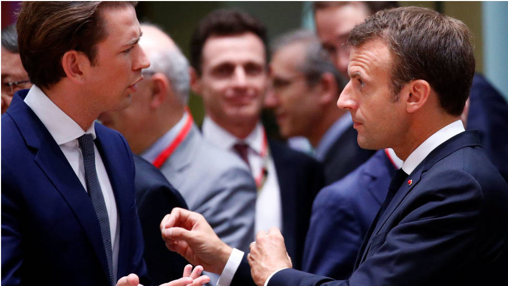

Los nuevos líderes de la UE no sufrieron la Europa de ayer
Napoleón decía que si querías conocer a alguien tenías que ver cómo era el mundo cuando tenía 20 años. Los hombres y mujeres que van a liderar la UE no vivieron sus crisis fundacionales.

Se suele atribuir a Napoleón la frase según la cual para conocer a un hombre -y hoy añadiríamos que a una mujer- hay que conocer cómo era el mundo cuando tenía veinte años. Es algo a tener en cuenta ahora que, tras las elecciones europeas, muchos de quienes ocupan los cargos más altos serán sustituidos por gente de la siguiente generación.
Cuando Mario Draghi tenía veinte años, Italia aún gobernaba la democracia cristiana surgida tras la Segunda Guerra Mundial. En Luxemburgo, el acero empezaba a dejar de ser el producto básico de la economía y Europa avanzaba hacia una integración más amplia.